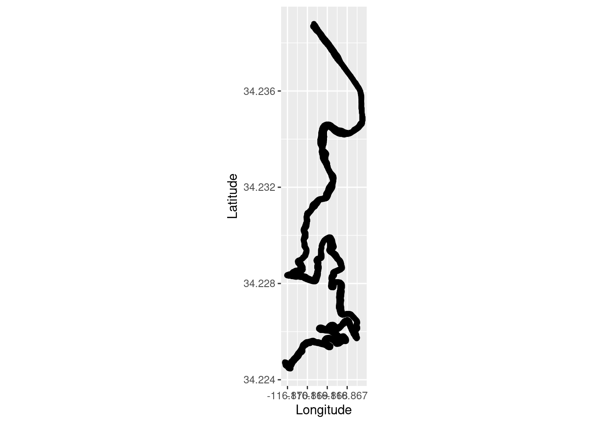
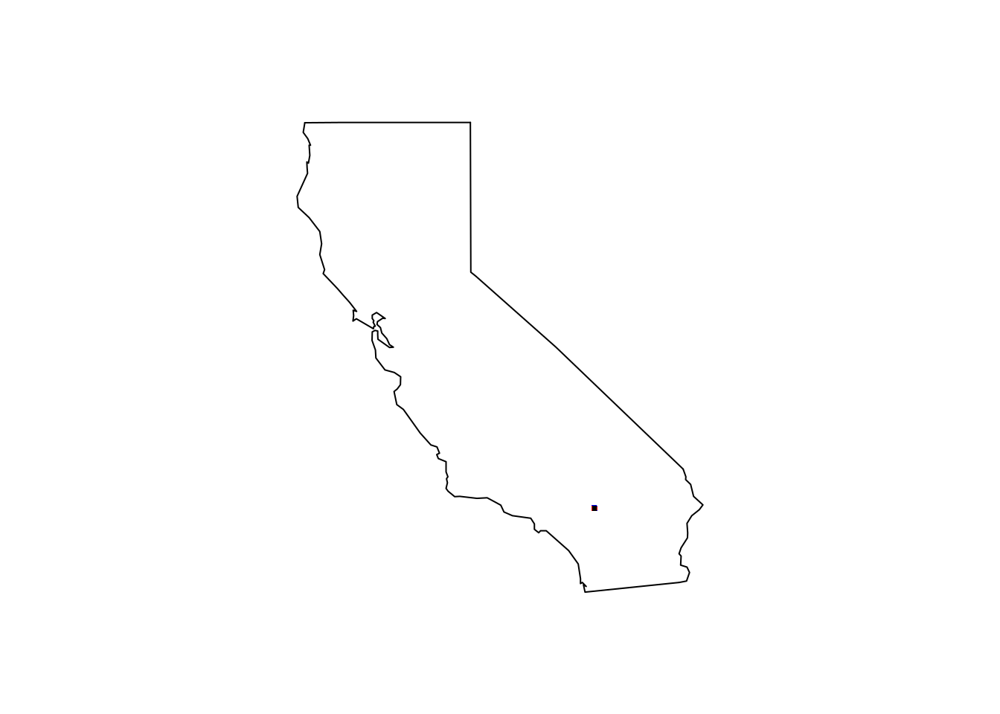
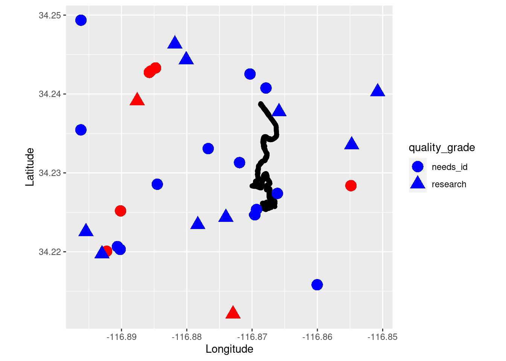

library(rinat)
library(tidyverse)Miracle Mile Species 5 and 6
species distribution
modeling
GIS
maps
data
trail run
exercise
explore
–Jeffrey’s and Ponderosa Pine
I am continuing on my quest of checking off all the conifer species that occur in the Miracle Mile. I recently found some Jeffrey’s Pine (Pinus jeffreyi) on a trail run while on vacation in the San Bernadino mountains East of Los Angeles. This is in an area where there is also Ponderosa Pine (Pinus Ponderosa). Sometimes the species are confused with one another and can even form hybrids making identification difficult. In general the Ponderosa’s are larger trees, but have smaller cones with the pointy end (umbos) of the individual seeds facing outward. The Jeffery’s pine has larger cones with the umbos facing down or inward making them easier to handle without poking yourself. The following are some quick data queries, manipulation and plotting.
Load the libraries.
Load the trail run data and take a look at the data frame.
TrailRun1 <- read.csv("~/DATA/data/TrailRun_JefferyPine.csv")
glimpse(TrailRun1)Rows: 2,194
Columns: 9
$ timestamp <chr> "2022-04-19 18:45:05", "2022-04-19 18:45:13", "2022-04-…
$ position_lat <dbl> NA, NA, NA, NA, 34.23880, 34.23873, 34.23869, 34.23868,…
$ position_long <dbl> NA, NA, NA, NA, -116.8687, -116.8686, -116.8686, -116.8…
$ distance <int> 0, 67, 72, 74, 76, 76, 80, 84, 87, 89, 91, 94, 98, 100,…
$ altitude <dbl> NA, 2112.4, 2112.6, 2112.8, 2113.0, 2113.2, 2114.0, 211…
$ cadence <int> NA, 83, 83, 83, 83, 83, 83, 83, 83, 83, 83, 83, 83, 83,…
$ speed <dbl> NA, 1.74, 1.74, 2.04, 2.04, 2.24, 2.24, 2.44, 2.44, 2.5…
$ temperature <int> NA, 27, 27, 27, 27, 27, 27, 27, 27, 27, 27, 27, 27, 27,…
$ vertical_speed <dbl> NA, 0.00, 0.00, -0.02, -0.02, -0.02, -0.02, -0.04, -0.0…Make a quick plot for the run.
TrailRun_plot <- ggplot(TrailRun1, aes(x = position_long, y = position_lat)) +
coord_quickmap() + geom_point() +
xlab("Longitude") + ylab("Latitude")
TrailRun_plot
Use the run data plot to bound the query to iNaturalist.
bounds <- c(34.2, -116.9, 34.25, -116.85)
pineJeff_iNat <- get_inat_obs(query = "Pinus jeffreyi", bounds = bounds, maxresults = 1000)
pinePond_iNat <- get_inat_obs(query = "Pinus ponderosa", bounds = bounds, maxresults = 1000)Take a quick look at the iNaturalist data frames.
glimpse(pineJeff_iNat)Rows: 22
Columns: 37
$ scientific_name <chr> "Pinus jeffreyi", "Pinus jeffreyi", "…
$ datetime <chr> "2023-02-05 13:24:29 -0800", "2023-01…
$ description <chr> "", "", "", "Found on the ground. Lar…
$ place_guess <chr> "San Bernardino National Forest, Big …
$ latitude <dbl> 34.22255, 34.21582, 34.23545, 34.2377…
$ longitude <dbl> -116.8954, -116.8600, -116.8962, -116…
$ tag_list <lgl> NA, NA, NA, NA, NA, NA, NA, NA, NA, N…
$ common_name <chr> "Jeffrey pine", "Jeffrey pine", "Jeff…
$ url <chr> "https://www.inaturalist.org/observat…
$ image_url <chr> "https://inaturalist-open-data.s3.ama…
$ user_login <chr> "ekoberle", "happyg", "orionsmcc", "s…
$ id <int> 148162933, 145894058, 143681542, 1284…
$ species_guess <chr> "Jeffrey pine", "", "Jeffrey pine", "…
$ iconic_taxon_name <chr> "Plantae", "Plantae", "Plantae", "Pla…
$ taxon_id <int> 48463, 48463, 48463, 48463, 48463, 48…
$ num_identification_agreements <int> 1, 0, 1, 1, 0, 0, 1, 0, 1, 1, 1, 0, 0…
$ num_identification_disagreements <int> 0, 0, 0, 0, 0, 0, 0, 0, 0, 0, 0, 0, 0…
$ observed_on_string <chr> "2023-02-05 13:24:29-08:00", "2023-01…
$ observed_on <chr> "2023-02-05", "2023-01-04", "2022-12-…
$ time_observed_at <chr> "2023-02-05 21:24:29 UTC", "2023-01-0…
$ time_zone <chr> "Pacific Time (US & Canada)", "Pacifi…
$ positional_accuracy <int> 3, 13, 357, 347, 217, 4, 4, 9, 8, 31,…
$ public_positional_accuracy <int> 3, 13, 357, 347, 217, 4, 4, 9, 8, 31,…
$ geoprivacy <lgl> NA, NA, NA, NA, NA, NA, NA, NA, NA, N…
$ taxon_geoprivacy <chr> "open", "open", "open", "open", "open…
$ coordinates_obscured <chr> "false", "false", "false", "false", "…
$ positioning_method <chr> "", "", "", "", "gps", "", "", "", ""…
$ positioning_device <chr> "", "", "", "", "gps", "", "", "", ""…
$ user_id <int> 172086, 4930790, 144477, 5660178, 426…
$ user_name <chr> "Eric Koberle", "Ethan Gilmore", "", …
$ created_at <chr> "2023-02-06 05:56:44 UTC", "2023-01-0…
$ updated_at <chr> "2023-02-10 02:50:33 UTC", "2023-01-0…
$ quality_grade <chr> "research", "needs_id", "needs_id", "…
$ license <chr> "CC-BY-NC", "CC-BY-NC", "CC-BY-NC", "…
$ sound_url <lgl> NA, NA, NA, NA, NA, NA, NA, NA, NA, N…
$ oauth_application_id <int> 3, 3, 3, 333, 2, 3, 3, 2, 2, 3, 3, 3,…
$ captive_cultivated <chr> "false", "false", "false", "false", "…glimpse(pinePond_iNat)Rows: 8
Columns: 37
$ scientific_name <chr> "Pinus ponderosa", "Pinus ponderosa",…
$ datetime <chr> "2022-08-09 18:00:33 -0700", "2020-07…
$ description <lgl> NA, NA, NA, NA, NA, NA, NA, NA
$ place_guess <chr> "San Bernardino National Forest, Big …
$ latitude <dbl> 34.22839, 34.23914, 34.21212, 34.2251…
$ longitude <dbl> -116.8549, -116.8876, -116.8729, -116…
$ tag_list <lgl> NA, NA, NA, NA, NA, NA, NA, NA
$ common_name <chr> "Ponderosa Pine", "Ponderosa Pine", "…
$ url <chr> "https://www.inaturalist.org/observat…
$ image_url <chr> "https://inaturalist-open-data.s3.ama…
$ user_login <chr> "jcarrk", "jiggajantastic", "josue79"…
$ id <int> 130186380, 52182504, 34645641, 332225…
$ species_guess <chr> "", "ponderosa pine", "ponderosa pine…
$ iconic_taxon_name <chr> "Plantae", "Plantae", "Plantae", "Pla…
$ taxon_id <int> 48461, 48461, 48461, 48461, 48461, 48…
$ num_identification_agreements <int> 0, 1, 2, 0, 0, 0, 0, 0
$ num_identification_disagreements <int> 0, 0, 0, 0, 0, 0, 0, 0
$ observed_on_string <chr> "2022-08-09 18:00:33-07:00", "Mon Jul…
$ observed_on <chr> "2022-08-09", "2020-07-06", "2019-10-…
$ time_observed_at <chr> "2022-08-10 01:00:33 UTC", "2020-07-0…
$ time_zone <chr> "Pacific Time (US & Canada)", "Pacifi…
$ positional_accuracy <int> 6, 53, 5, NA, 3, 5, 5, 10
$ public_positional_accuracy <int> 6, 53, 5, NA, 3, 5, 5, 10
$ geoprivacy <lgl> NA, NA, NA, NA, NA, NA, NA, NA
$ taxon_geoprivacy <chr> "open", "open", "open", "open", "open…
$ coordinates_obscured <chr> "false", "false", "false", "false", "…
$ positioning_method <chr> "", "", "", "gps", "", "", "", ""
$ positioning_device <chr> "", "", "", "gps", "", "", "", ""
$ user_id <int> 5960713, 3241047, 2173678, 105431, 10…
$ user_name <chr> "", "", "Josue Sandoval", "Shaun M. M…
$ created_at <chr> "2022-08-10 01:00:43 UTC", "2020-07-0…
$ updated_at <chr> "2022-08-10 01:00:53 UTC", "2021-05-3…
$ quality_grade <chr> "needs_id", "research", "research", "…
$ license <chr> "CC-BY-NC", "CC-BY-NC", "", "CC-BY-NC…
$ sound_url <lgl> NA, NA, NA, NA, NA, NA, NA, NA
$ oauth_application_id <int> 3, 3, 3, 2, 2, 3, 3, 3
$ captive_cultivated <chr> "false", "false", "false", "false", "…Plot all the data on a California map to orient geographically where it is and to check for overlap.
maps::map(database = "state", region = "california")
points(pineJeff_iNat[ , c("longitude", "latitude")], pch = ".", col = "blue", cex = 3)
points(pinePond_iNat[ , c("longitude", "latitude")], pch = ".", col = "red", cex = 3)
points(TrailRun1[ , c("position_long", "position_lat")], pch = ".", col = "black", cex = 3)
Overlay the plots and add research grade symbols (triangle) and needs_id (circle). By default ggplot will have zoomed in on the data given the bounds. We can see that both species occur in the same general area, but there are not any direct overlaps in the research grade observations and my trial running route.
run_plot2 <- ggplot() +
coord_quickmap() +
geom_point(data = TrailRun1, aes(x = position_long, y = position_lat), color = 'black') +
geom_point(data=pinePond_iNat, aes(x = longitude, y = latitude, shape = quality_grade), color = 'red', size = 5) +
geom_point(data=pineJeff_iNat, aes(x = longitude, y = latitude, shape = quality_grade), color = 'blue', size = 5) +
xlab("Longitude") + ylab("Latitude")
run_plot2
We have many more Ponderosa pines near Mount Shasta including one I found on another run. For this iNaturalist observation I also took a photo of the cone. If you take a look at the Ponderosa pine observations you can find mine via my username (rjcmarkelz).
bounds2 <- c(40.194, -124.4323, 42.0021, -120) # Northern California Bounds
PondPineNor_iNat <- get_inat_obs(query = "Pinus ponderosa", bounds = bounds2, maxresults = 100)
PondPineNor_iNat$user_login # Look for rjcmarkelz [1] "michael_long" "michael_long" "michael_long"
[4] "kristay58" "monicole" "kristendimas"
[7] "loantaka" "cmccarron" "matthewchovanec"
[10] "chief_shiitake" "symbiiotica" "cmccarron"
[13] "luca_hickey" "luca_hickey" "mike-potts"
[16] "paulette99" "paulette99" "mugwortdr"
[19] "jessicadav" "cmccarron" "kristymorrow"
[22] "emily_jackson" "emily_jackson" "linda-s-carter"
[25] "alleneli" "avidhiker" "carexobnupta"
[28] "connorcochrane" "luca_hickey" "northgondwana"
[31] "alleneli" "morbidius" "steph_mo"
[34] "kristymorrow" "ukiahhaiku" "grmidnight"
[37] "ecline" "damontighe" "radamisprime"
[40] "morbidius" "shuckabone" "amkatros"
[43] "roxannereiners" "max_forster" "alan_rockefeller"
[46] "alan_rockefeller" "alan_rockefeller" "alleneli"
[49] "jamesjarrett00" "jamesjarrett00" "madroneone"
[52] "luca_hickey" "luca_hickey" "steph_mo"
[55] "steph_mo" "brane_dood" "meadowlarkmerlin"
[58] "biologystuff" "sedgequeen" "madroneone"
[61] "michaelkauffmann" "cmccarron" "carexobnupta"
[64] "carexobnupta" "jim22lawrence" "dgrimmphd"
[67] "dgrimmphd" "john_virzi_hort" "danielkennedy"
[70] "ekgrijalva" "danielkennedy" "brendanswift"
[73] "greenfieldlouis" "luca_hickey" "hkibak"
[76] "gentilcore" "gentilcore" "tallianna"
[79] "chris_earle" "liuelliot2187" "brennanpopovic"
[82] "pikabombadier" "frankdaluddung" "dgrimmphd"
[85] "dgrimmphd" "dgrimmphd" "drew_meyer"
[88] "gcwarbler" "k-bot" "luca_hickey"
[91] "luca_hickey" "sirhikesalot" "drew_meyer"
[94] "justin426" "luca_hickey" "luca_hickey"
[97] "luca_hickey" "luca_hickey" "samuel_monteon"
[100] "lydia_365" Filter and select the image_url so we can compare the size and physical attributes of the cones.
PondPineNor_iNat %>% filter(user_login == "rjcmarkelz") %>% select(image_url)[1] image_url
<0 rows> (or 0-length row.names)pineJeff_iNat %>% filter(user_login == "rjcmarkelz") %>% select(image_url)[1] image_url
<0 rows> (or 0-length row.names)Jeffery’s Pine with the larger (hand for scale) cone with the umbos pointed in: 
Ponderosa Pine with the smaller (hand for scale) cone with the umbos pointed out: